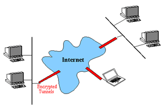
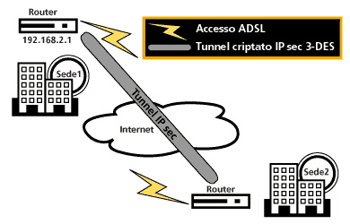
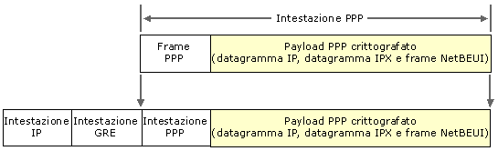
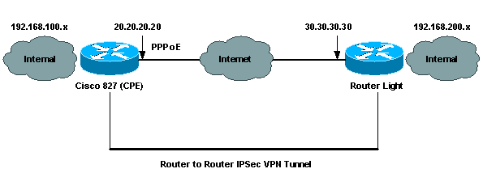

Con il termine VPN si descrivono degli ambiti di una rete pubblica (generalmente nodi configurati a questo scopo) che si scambiano, in modo sicuro, informazioni private.
Una rete privata virtuale (Virtual Private Network) stabilisce dei collegamenti a livello di infrastruttura della rete, piuttosto che a livello delle applicazioni. Il suo scopo è quello di rendere sicuro il traffico su una rete (Internet, Intranet o Extranet) creando un tunnel (tubo virtuale) che, a sua volta, consente ai computer remoti di scambiarsi le informazioni come se possedessero un collegamento diretto. In pratica un end to end in una rete condivisa da tutti, o da molti, garantito dalla codifica dei dati in transito.
Il primo vantaggio è di tipo economico. Infatti, la sicurezza assoluta la si può avere esclusivamente con un link diretto fra i due end-point, ma questa modalità richiede un collegamento di tipo "dedicato" che, in ambito WAN, ha dei costi altissimi. Proviamo semplicemente ad immaginare quanto costa un CDN dedicato fra due sedi e moltiplichiamolo per i km che separano le due sedi. Con le VPN si utilizza Internet, o una Intranet già esistente, senza aggravio di spesa relativa alla connettività. L'unica spesa da prevedere è quella relativa agli apparati di supporto e del sw a corredo.
La rete privata virtuale può essere realizzata mediante due diverse tecnologie:

Il protocollo TCP (Transmission control protocol) nella sua formulazione attuale si occupa del packaging a livello 4 dello standard OSI, con successivo ripristino dei pacchetti una volta arrivati a destinazione e l'IP si assicura che i pacchetti arrivino all'host designato. Oggigiorno, su Internet viene usato il protocollo IP versione 4 mentre la versione 5 non è stata ancora accettata dagli organismi di standardizzazione. Uno dei propositi annunciati dalla nuova versione di IP è quello di poter incrementare l'area di indirizzabilità sulla rete. L'IETF (Internet engineering task force) sta lavorando per aggiungere nuove funzionalità al protocollo, compresa la sicurezza. A proposito di quest'ultima area, con particolare riferimento alla crittografia, abbondano i brevetti di tipo commerciale e l'IETF è restio ad adottare qualsiasi standard basato su tecnologie non disponibili liberamente. In definitiva, anche se l'IETF continua ad operare per definire un standard VNP tramite il gruppo di lavoro sulla sicurezza di IP versione 6, restano ancora notevoli ostacoli da superare.
In
realtà, secondo gli esperti, la parte di IPV6 riferita alla tecnologia
di crezione delle VPN è insufficiente per assicurarne l'interoperabilità.
Infatti, due delle assenze principali nelle specifiche riguardano il protocollo
di scambio delle chiavi e uno standard per l'algoritmo di cifratura.
I produttori, in mancanza di metodi standard di crittografia
delle informazioni e di invio delle chiavi di decrittazione agli utenti autorizzati,
proporranno sicuramente soluzioni proprietarie, con tutti gli effetti negativi
che si possono immaginare in termini di interoperabilità delle reti.
In seguto esamineremo la modalità di tunneling implementata da Cisco
sul router 827.
Si possono implementare dei collegamenti VPN sicuri usando il protocollo IPSec (Internet Protocol Security) di Cisco Systems in modo da rendere sicuri di dati. Se il protocollo IPSec è stato implementato correttamente, gli utenti remoti possono accedere con sicurezza alle risorse dell'azienda, certi della propria privacy.
L'implementazione di Cisco del protocollo IPSec
Quando nel 1995 la IETF (Internet Engineering Task Force) ha standardizzato il protocollo IPSec, i produttori hanno iniziato a offrirne varie implementazioni hardware e software, infatti Cisco ha implementato il protocollo IPSec nei router.
La sicurezza IPSec è disponibile nel sistema operativo Cisco IOS (Internetwork Operating System) fin dalla Release 11.3T presentata nel mese di Aprile del 1998. Prima dell'implementazione del protocollo IPSec, il sistema operativo Cisco IOS era disponibile con la tecnologia CET (Cisco Encryption Technology), una funzionalità di crittografia proprietaria che viene ancora supportata da Cisco IOS nella versione 12.x. In effetti, il protocollo IPSec e la tecnologia CET si possono usare nella configurazione del router in modo da supportare un sistema misto di tecnologie vecchie e nuove. Un'altra importante capacità fornita da Cisco è costituita dal tunneling GRE (Generic Routing Encapsulation); disponibile a partire dal Cisco IOS Release 10, il tunneling GRE permette a due router Cisco di passare il traffico non-IP attraverso una rete IP-only. Questa funzionalità risulta particolarmente utile quando è necessario passare su Internet del traffico IPX o AppleTalk. Il protocollo IPX richiede un packaging speciale per attraversare le reti che si basano su IP. Il tunneling GRE incapsula il protocollo IPX in un pacchetto IP. La tecnologia GRE non serve per implementare il protocollo IPSec, anche se i tunnel GRE forniscono un livello significativo di flessibilità soprattutto quando viene connesso più di un sito remoto. Implementato come interfaccia virtuale sul router, ciascun tunnel GRE può avere diverse regole di filtraggio e capacità di protocollo.
Intorno a un frame PPP (un datagramma IP, un datagramma IPX o un frame NetBEUI) sono disposte un'intestazione GRE (Generic Routing Encapsulation) e IP. Nell'intestazione IP sono presenti gli indirizzi di origine e destinazione IP che corrispondono al client e al server VPN.

CONFIGURAZIONE
Esistono diverse documentazioni che possono implementare la configurazione IPsec, ma in generale i passi principali seguiti sono i seguenti:
IKE è un protocollo usato per negoziare automaticamente parametri sicuri, autenticare, e stabilisce accordi tra i protocolli IPsec dei router.
Per effettuare una politica IKE, bisogna usare i seguenti comandi:
crypto
isakmp policy 1
encr 3des
authentication pre-share
crypto isakmp key sharedkey address 30.30.30.30
Il comando crypto isakmp policy 1, crea una nuova politica di autenticazione IKE. In questa politica vengono definiti i parametri necessari per compiere la negoziazione con il router remoto. Il numero presente alla fine del comando può essere impostato su un valore compreso tra 1 e 10.000. Questo numero specifica la priorità di questo elemento in relazione con gli elementi simili. È anche possibile creare elementi multipli, con diversi livelli di crittografia per vari siti remoti. Per esempio, si può crittografare il traffico verso una struttura di ricerca che gestisca dei dati importanti, usando uno standard più elevato rispetto a quello che caratterizza i dati diretti verso altre sedi periferiche.
Encryption Des imposta sullo standard DES (Data Encryption Standard) il tipo di crittografia per questa connessione. Attualmente Cisco offre lo schema 3DES (Triple DES) quale funzionalità del sistema operativo Cisco IOS Release 12.0(2)T e versioni successive. Lo schema 3DES è soggetto a controlli di esportazione più stringenti rispetto a quelli che caratterizzano lo schema DES, ma è più sicuro di quest'ultimo. Se la sicurezza elevata viene considerata indispensabile, è necessario utilizzare l'insieme di funzionalità dello schema 3DES (bisogna tenere presente che, se una parte della propria attività si trova al di fuori del Nord America, l'esportazione del software 3DES potrebbe risultare alquanto difficile). Il secondo comando di default è Hash Sha, che imposta l'hash per le negoziazioni IKE sul più sicuro algoritmo hash SHA-1.
La chiave pre-share è usata per identificare e autenticare l'IPsec tunnel e il comando authentication pre-share indica al processo IKE che le chiavi necessarie per questa connessione verranno inserite manualmente. In alternativa, è possibile usare l'opzione Rsa-Sig che permette ad un'authority CA (Certificate Authority) di fornire le chiavi. In alternativa si potrebbe usare, per esempio, il prodotto PKI di Entrust Technologies per impostare sulla LAN un server di certificati locale. Il vantaggio che accompagna l'uso del server di certificati è costituito dalla scalabilità. Se la nostra rete esemplificativa avesse più di dieci link VPN, la gestione manuale delle chiavi inizierebbe rapidamente a richiedere molto tempo poiché è necessario configurare manualmente (usando il comando crypto isakmp key) le chiavi dei peer potenziali di ciascun router. Nel caso di una configurazione VPN completamente mista, una rete con più di dieci link VPN comporterebbe N x (N - 1) elementi di chiave (per esempio, 5 router comporterebbero 20 chiavi, 10 router comporterebbero 90 chiavi) in ciascun router. Per autenticare tutte le richieste in arrivo da una connessione crittografata usando un authority CA, il router può interrogare quest'ultima al fine di chiedere se la connessione in arrivo viene da un host autorizzato. Le chiavi si possono generare in corrispondenza di certi intervalli di tempo in modo da garantire che, se si dovesse verificare una compromissione della sicurezza, rimarrebbe vulnerabile soltanto il traffico trasmesso dai server prima del successivo cambiamento di chiavi. Il comando crypto isakmp key viene usato per impostare la chiave predisposta per questo host.
Un transform-set è la combinazione di regole che governa esattamente il modo in cui i dati vengono crittografati e autenticati. Durante la negoziazione IKE, i punti si accordano nell'usare una particolare trasform set per poter proteggere il flusso di dati. Il processo IKE stabilisce soltanto l'identità di ciascun partecipante alla comunicazione. Nella fase di negoziazione IKE, i peer cercano attraverso trasform set quella che sia uguale per tutti, e nel momento in cui viene trovata viene selezionata e applicata per la protezione del traffico. Ora che si conosce l'identità, si può prendere in considerazione il passaggio dei dati. Il comando transform-set fornisce entrambe le forme di sicurezza dei pacchetti: AH (Authentication Header) per l'autenticazione e il rilevamento delle risposte ed ESP (Encapsulating Security Payload) per crittografare il carico di dati di ciascun pacchetto. Questo comando è caratterizzato da molte combinazioni possibili, in particolare quando si crea una VPN IPSec utilizzando hardware non prodotto dal Cisco. Per configurare una politica IKE, bisogna usare i seguenti comandi nella confugurazione globale:
crypto ipsec transform-set vpn-test esp-3des esp-sha-hmac
Stabilendo manualmente una connessione sicura, non c'è negoziazione tra i punti quindi entrambi i lati devono specificare le stesse serie di trasformazioni.
Le Access List definiscono quanto il traffico IP sarà protetto con la codifica. Le Access List estese sono usate per precisare ulteriormente gli indirizzi sorgenti e destinatari e il tipo di pacchetti.
ip
access-list extended vpn-static1
permit 192.168.100.0 0.0.0.255 192.168.200.0 0.0.0.255
Il range di indirizzi nelle Access List rappresenta il traffico localmente per ogni router. Qualsiasi traffico non protetto verso l'interno, che corrisponde ad un ingresso di tipo permit nell'Access List, sarà rifiutata, perchè IPsec protegge questo tipo di traffico.
Inoltre, il normale comportamento permette che il resto del traffico sia spedito senza crittografia e questo processo è nominato tunneling diviso. Alternativamente, per fornire alla parte locale protezione con un firewall, tutto il traffico dalla parte remota può essere mandato in un luogo centrale dotato di accesso sicuro ad Internet. Per disabilitare il tunneling diviso e per mandare traffico su Internet fino ad un router, si fà uso delle Access List di default:
ip
access-list extended vpn-static1
permit host 192.168.100.0 0.0.0.255.0 any
Fino a questo punto, ogni elemento è stato coinvolto soltanto perifericamente con la protezione dei flussi di dati di routing. Nel comando crypto map, tutti gli elementi vengono raggruppati, l'ingresso crypto map unisce gli IPsec uguali, l'insieme di trasformazioni usate e le access list usate per definire il traffico sono cifrate. Le entrate crypto map sono valutate in sequenza. Di seguito, il nome del crypto map static-map ed il numero del crypto-map sono significativi localmente, 1 è il numero di sequenza, che si rende necessario quando si creano più mapping per fornire diversi livelli di crittografia per vari flussi di dati, mentre il comando ipsec-isakmp indica al mapping che si sta usando il processo IKE. Il comando set peer imposta la destinazione per questo flusso di dati protetto. Il comando match address, indica al protocollo IPSec quali pacchetti devono essere protetti. In questo contesto abbiamo usato le access list per proteggere un pacchetto IP in uscita che corrisponde alla lista e per indicare al protocollo IPSec di ignorare i pacchetti non corrispondenti alla lista.
crypto
map static-map local-address Ethernet0
crypto map static-map 1 ipsec-isakmp
set peer 192.168.101.1
set transform-set vpn-test
match address vpn-static1
Le crypto map devono essere applicate ad ogni interfaccia per cui il traffico IPsec passerà.
Per applicare crypto map all'interfaccia, bisogna usare i seguenti comandi:
interface
Ethernet0
ip address 192.168.100.100 255.255.255.0
crypto map static-map
Applicando crypto map all'interfaccia fisica, si ordina al router di stimare tutto il traffico con Security Associations Database.
Uso del Tunneling GRE
Alternativamente, il traffico da cifrare potrebbe essere spedito su un'interfaccia GRE, che sarebbe configurata per usare la crittografia IPsec. I pacchetti spediti dall'interfaccia GRE vengono incapsulati e instradati fuori sull'interfaccia fisica. Usando l'interfaccia GRE, i due router possono supportare il protocollo dinamico di instradamento IP per scambiare gli aggiornamenti di instradamento al di sopra del tunnel, e per permettere il traffico del multicast IP. Comunque, quando si usa IPsec con GRE, le access list per il traffico di cifratura non elencano la rete e le applicazioni desiderate, ma piuttosto indirizzano per rendere possibile le sorgenti e destinazioni del tunnel GRE sul senso outbound.
Dopo avere impostato una configurazione IP di base in corrispondenza di ciascun sito, la fase successiva prevede la creazione del tunnel GRE. Il comando Tunnel Source specifica l'indirizzo sorgente che deve essere usato quando si inviano i pacchetti tunnel; il comando Tunnel Destination indica invece al router dove inviare i pacchetti tunnel risultanti.
interface
tunnel1
ip address 20.20.20.20 255.255.255.0
tunnel source Ethernet0
tunnel destination 30.30.30.30
crypto map static-map
In aggiunta alla creazione di una interfaccia tunnel, le access list usate per la crypto map devono essere modificate per consentire soltanto il traffico GRE sul outbound per entrambi i punti.
ip
access-list extended vpn-static1
permit gre host 192.168.100.1 host 192.168.101.1
Completamento della VPN
A
questo punto è necessario verificare che la VPN funzioni correttamente.
Per verificarlo, eseguire il comando show crypto isakmp sa.
Questo comando show permette di vedere se il processo
IKE ha instaurato un'associazione
di sicurezza con il router remoto. Non si verificherà nessuna comunicazione
attraverso il tunnel fino a quando il processo IKE
non sarà stato configurato correttamente. Se non viene instaurata l'associazione
di sicurezza (SA- Security Association)
IKE, si può usare il
comando debug crypto isakmp per vedere se si è
verificato qualche errore nel processo IKE.
| dst | src | state | conn-id | slot |
| 30.30.30.30 | 20.20.20.20 | QM_IDLE | 1 | 0 |
Quando il protocollo IKE conclude il suo processo, il protocollo IPSec deve creare una associazione SA con il router remoto. Questo comando permette di verificare che i dati vengano crittografati. Se si ricevono degli zeri, usare il comando show crypto ipsec sa in modo da visualizzare gli errori. L'output seguente mostra ciò che viene generato dal comando show crypto ipsec sa, comprendente alcune informazioni sul numero di pacchetti crittografati.
Cisco827#show
crypto ipsec sa #pkts decaps: 10, #pkts decrypt: 10, #pkts verify 10 #send errors 10, #recv errors 0 |
Dopo la verifica dell'implementazione, si avrà a disposizione una VPN funzionante. Il listato mostra il testo completo della configurazione , che viene visualizzato eseguendo il comando show run per il router della VPN Cisco827.

version
12.1
no service single-slot-reload-enable
no service pad
service timestamps debug uptime
service timestamps log uptime
no service password-encryption
!
hostname 827
!
logging rate-limit console 10 except errors
!
ip subnet-zero
no ip finger
!
no ip dhcp-client network-discovery
vpdn enable
no vpdn logging
!
vpdn-group pppoe
request-dialin
protocol pppoe
!
!
!
crypto isakmp policy 1
encr 3des
authentication pre-share
group 2
crypto isakmp key sharedkey address 30.30.30.30
!
!
crypto ipsec transform-set dsltest esp-3des esp-sha-hmac
!
crypto map static-map local-address Ethernet0
crypto map static-map 1 ipsec-isakmp
set peer 30.30.30.30
set transform-set vpn-test
match address 101
!
interface Ethernet0
ip address 192.168.100.100 255.255.255.0
crypto map static-map
ip nat inside
!
interface ATM0
no ip address
no atm ilmi-keepalive
bundle-enable
dsl operating-mode ansi-dmt
!
interface ATM0.1 point-to-point
pvc 0/33
!--- This is usually provided by the ISP
protocol
pppoe
pppoe-client dial-pool-number 1
!
!
interface Dialer1
ip address 20.20.20.20 255.255.255.0
!---
This is provided by the ISP
!--- Another variation is ip address negotiated
ip
mtu 1492
ip Nat outside
encapsulation ppp
no ip route-cache
no ip mroute-cache
dialer pool 1
ppp authentication chap callin
ppp chap hostname testuser
ppp chap password 7 00071A1507545A545C
crypto map test
!
ip classless
ip route 0.0.0.0 0.0.0.0 Dialer1
no ip http server
!
ip Nat inside source route-map nonat interface Dialer1 overload
access-list 1 permit 192.168.100.0 0.0.0.255
access-list 101 permit ip 192.168.100.0 0.0.0.255 192.168.200.0 0.0.0.255
access-list 105 deny ip 192.168.100.0 0.0.0.255 192.168.200.0 0.0.0.255
access-list 105 permit ip 192.168.100.0 0.0.0.255 any
!
route-map nonat permit 10
match ip address 105
!
!
line con 0
transport input none
stopbits 1
line vty 0 4
login
!
scheduler max-task-time 5000
end